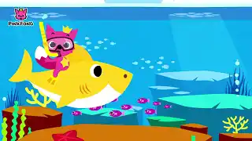
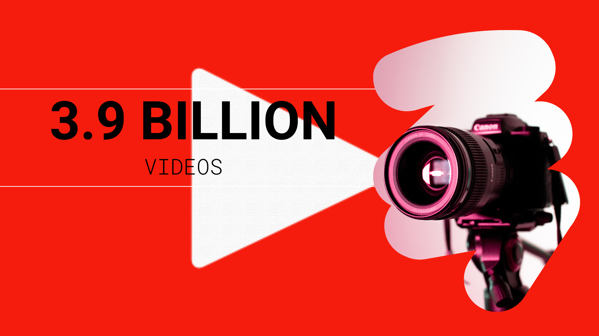

YouTube Stats

No. 1 YouTuber with Most Subscribers
Mr Beast holds the title of the most subscribed individual creator with over 366 million subscribers.

Most Viewed Video on YouTube
"Baby Shark Dance" by Pinkfong is the most viewed video with over 12 billion views.

Most Liked Video on YouTube
"Despacito" by Luis Fonsi has over 50 million likes, making it the most liked video on YouTube.

Total Number of Users on YouTube
YouTube boasts over 2.7 billion active users worldwide as of 2024.

Most Viewed Livestream
The most viewed livestream is the Chandraayan 3 Launch, with over 79 million concurrent viewers.

Total No Of Videos Posted On YouTube
There are approximately 3.9 billion videos on YouTube, of which 826 million are YouTube Shorts.